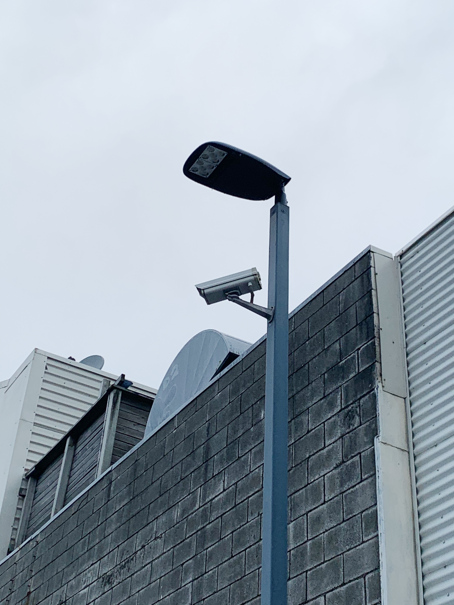

Example 1
Fire Alarm. Most buildings have their fire alarm system connected directly to fire station in case of a big fire.

Example 2
Air Quality Monitoring, located near 222 Willis St. Just like its names suggests, it monitor the air quality in the inner city of Wellington.

Example 3
CCTV Outside McDonald's.

Example 4
Antennas. Used for TVs